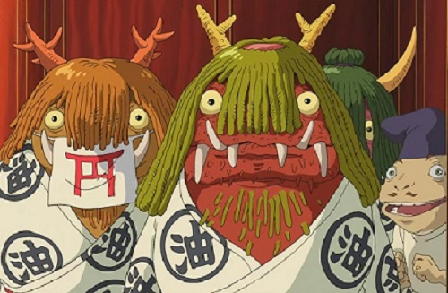

Yokai en el cine
Durante los años 60, los Yokai fueron fuente de inspiración para una serie de películas de terror inquietantes como Onibaba o
Kuroneko
En el resto de producciones dedicadas a los Yo-kai, se observa un estilo mucho más amable, e incluso infantil.
Los mejores ejemplos son las películas Yokai Hyaku Monogatari de 1968, trata sobre la procesión de los 100 demonios,
o la Gran Guerra Yokai, dirigida por Takashi Miike en 2005.
Pero las películas más cercanas a lo descrito en los libros sobre yokai, son las películas del estudio Ghibli,
como Pompoko y El viaje de Chihiro.
